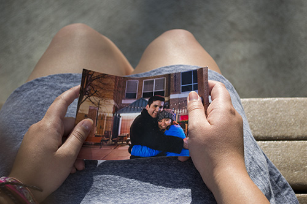

My mom saw through my forced grins with her keen intuition. She offered to make the two-hour drive from San Diego to Fullerton with me. The New Year’s breeze wasn’t the only thing giving me chills that day. To keep warm, I hugged my legs in the passenger seat of the car, silent. Somewhere along the northbound Interstate 5 between Oceanside and San Clemente, my mom broke the silence. “Something’s wrong,” she whispered.
I swallowed the piles of angst wedged in my throat and confessed, “I think I might break up with David today.”
I had been dating David for four months and our relationship was already a seesaw of highs and lows. As much as I would have liked to say these were natural ups and downs of a budding relationship, that wasn’t the case.
It was because it had also only been four months since David had broken up a five-and-a-half year relationship.
Despite what it seemed, I wasn’t the other woman. I didn’t break up a beautiful relationship and I didn’t scheme my way to get a grip on David’s heart. I just fell in love.
It was the last day of production at the Daily Titan. The talk of the night was the return of “Dahood,” a former staffer. His friends had made a banner proudly donning a black vector couch, some sort of inside joke that commemorated the return of their beloved friend.
A wave of accolades hit him as he opened the door. I sat at my computer, watching in bewilderment as one after another, editors approached and hugged David. He had dark, black hair that looked like it hadn’t been cut in months and a scruffy beard three hours past a five o’clock shadow. He matched his dark features with clothes of the same color.
Despite the dark, rugged exterior, he had kind brown eyes that looked happy to be home. We were introduced briefly before David floated away to socialize with the rest of the staff.
After a long work night, the staff decided to go out and celebrate the end of the semester by eating at Denny’s. It was cold out and as we waited for everyone to convene in the parking lot, David draped his black jacket around my shivering shoulders.
Inside, he sat across from me as we ate and we were able to talk. As our conversation went on, I noticed the words came easy and our banter was friendly. He was articulate, well mannered, thoughtful, chivalrous, willing to go cold and I was impressed.
I felt like there was light inside me. A sort of inexplicable warmth, like sunbeams were piercing through my skin, radiating heat and keeping me warm. My face hurt from smiling so much. I heard him talk about his faith and I felt that faith within me. I felt like God had put him there in front of me for some reason or another—to make me feel warm. He talked about his love for God, and I swear I never believed more. I never felt more certain of happiness and faith and love. 
After that, David and I became friends rather quickly. Our newsroom shifts often ran late and in an effort to make sure I arrived to my car safely, David would offer to drive me to the Troy High School parking lot. During these short five minute rides we would bask in the synth-pop melodies of The Postal Service and the stringy acoustic versions of songs by Dashboard Confessional. We sang, talked and planned lunch dates. Between the rides to my car on late nights and our first lunch out at Panera, we clicked. He had a friendly quality that I hadn’t seen on anyone else, he was genuinely interested in being my friend. There was no trace of a front in his approach. He was funny, smart and relatable. I’m not a talker, but when I did, he actually listened. To return the favor, I listened to him go on and on about the amazing and beautiful girl pictured in the black frame on his desk in the newsroom. I had to meet his girlfriend, he said. She wasn’t just beautiful, she was lucky, I thought.
David told me the story of how he had asked her to dance when they were kids and how years later they started dating. When they were about to go away to college, fate stepped in and sent her to school at Cal State Fullerton and sent him to Hope International, right across the street. He talked of marrying her after graduating from college. It was meant to be.
As a friend, I was happy he had a good girl that loved him. Yet with every adoring word he would shoot in her direction, my heart and hopes were belittled.
As David and I became closer, a fault line in his relationship was discovered and that crack only deepened. It was mid-September and there was sadness circulating in the night air. David and I were in his white truck, stationed at the top of the Nutwood parking structure. He was venting, clearly upset because he was now on a break with his girlfriend. We were confined in the cockpit of his truck, breathing in the same air, hanging on to every word the other said. He talked about confusion, I asked how he felt about us. I was searching for a sign, something that would confirm that he felt what I felt.
Eventually, I kissed him. Maybe I kissed him out of sympathy, or maybe fully out of longing, but I did, and he kissed back. Some time after, David broke up with his girlfriend and a week later, we went on our first date to Pasadena. We straddled a line that had friendship on one side and love on the other, many times. David would tell me he didn’t want to date me, but in the same conversation he would arrive at the conclusion that he loved me. I didn’t understand what was happening, I just held on to passing compliments and declarations of love. I had changed his perspective, he would say. I had kissed him and showed him the world he could one day have.
We sat on a couch in the lobby of a Chicago hotel during a college media convention, trying to analyze what was going on. I had become impatient and I was tired of trying to find the safe space between friends and lovers. I wasn't that girl, the one that allows someone to dictate how she feels. I wanted stability and I wanted it now. As the topic of conversation turned toward commitment, I found myself having to counterargue what David was saying.
He argued that he would be leaving at the end of the year to pursue his career; he didn’t want to start something and then have to finish it. His reason for not dating me was that he didn’t want to hurt me. I responded that it would hurt to see him go whether we were in a relationship or not.
I was in too deep. I had fallen in love with this boy, who was just as confused as I was. A boy who was juggling issues I had no idea I would have to catch when he grew tired of juggling. All I knew is that I didn't want to lose him, that I couldn’t lose him.
At the end of the convincing, I got what I thought I wanted the most: He asked me to be his girlfriend.
My mom listened intently as I went on about my relationship with David. I told her that David was distant and felt guilty about hurting his ex-girlfriend. We were distant; it had been a month since we had seen each other. Winter break had separated us and being away from each other in our rocky relationship was hard.
As tears filled my eyes and I struggled to turn sobs into words, my mom asked a single question: “Do you love him?” Before I could answer, my mom continued to talk about how David had done no wrong. He had made a mistake by not allowing himself time to heal, but I had already known that. I was aware of what I was getting into. She told me if I loved David, I should go into our reunion thinking there was something to rescue, not dooming it by thinking I was going to break up with him.
“When you see him for the first time, greet him like you would if you weren’t upset or angry. Show him you love him and it will all be OK,” she advised.
Months later, David mentioned that my heartfelt greeting was the one thing that let him know we were going to make it.
David and I sat on a bench at Hope International and I struggled to find where to begin.
He was still dealing with issues from his previous relationship. Up until then, there was an imbalance in our relationship. The weight of the good had been countered by comparisons, distance and reminiscing. He said he felt guilty, and while he was away in the distant land of regret,
I would patiently stand by and wait for him to return to me. I felt like a victim of unrequited love, despite what David told me every day. I took a deep breath, and began to detail my concerns.
“I just don’t understand how you could love me as much as you say you do, and still be weighed down by her.” “You’re over there, feeling sorry for how much you hurt her. All the while, I’m here being hurt by you.”
He sat there, shoulders hunched, grasping my hand as if it was the last time he would hold it.
He said he would change and this would give him that push he needed to get over it. He loved me more than anything. I believed him.
I would like to say that close call in January changed everything for the better. In a way it did, in a way it didn’t. How our relationship began has left me with many insecurities, and left him with a lot of guilt. Though I sometimes wish I could fast forward to the good part, where nothing holds us back and we are completely and utterly in love with each other, I can’t. Though I wish I could change our story and how it all began, I can’t.
The story of how I fell in love with David is not a romantic story. When we fell in love, it was hushed and unreciprocated. There was profound guilt and overwhelming confusion. It wasn’t love at first sight, it wasn’t easy and at the beginning, it felt all wrong. But one thing, not masochism, no, has kept me there all along.
It’s the belief that despite our harsh takeoff and bumpy ride, it will one day be a smooth landing. It’s the belief that one day I’ll be able to look at David and smile because we made it, and that our love for each other got us through it.
I look at David and see perfection in its most imperfect form. I love him and he loves me despite our flaws. There’s nothing that could make me let go of that, not now or ever.